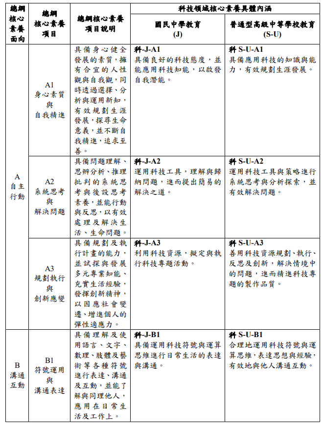
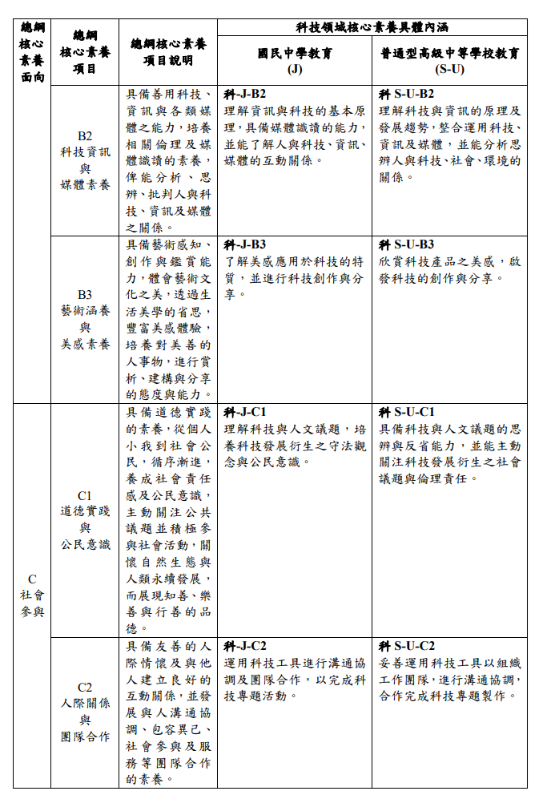
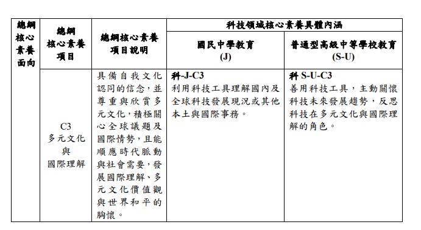
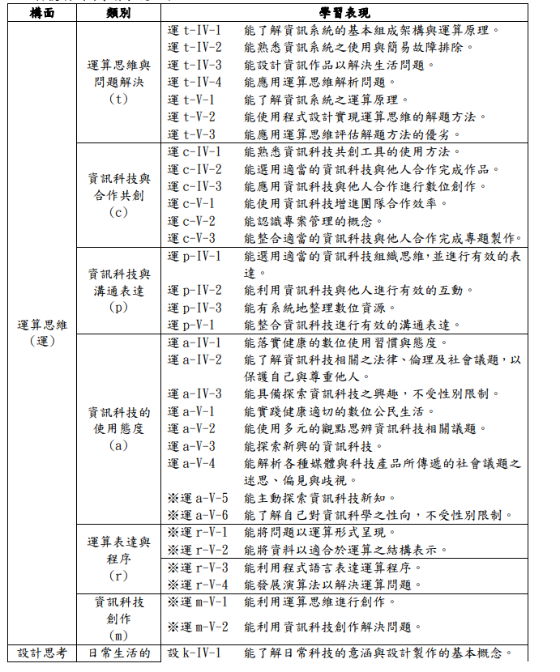
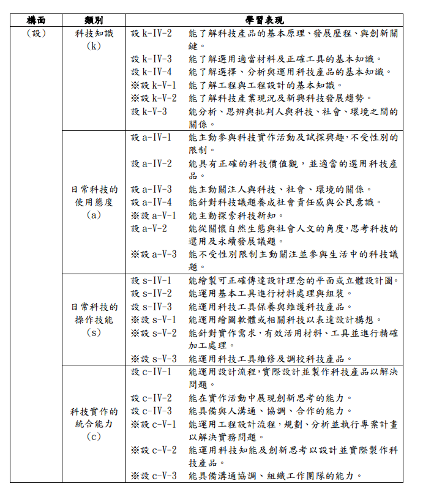
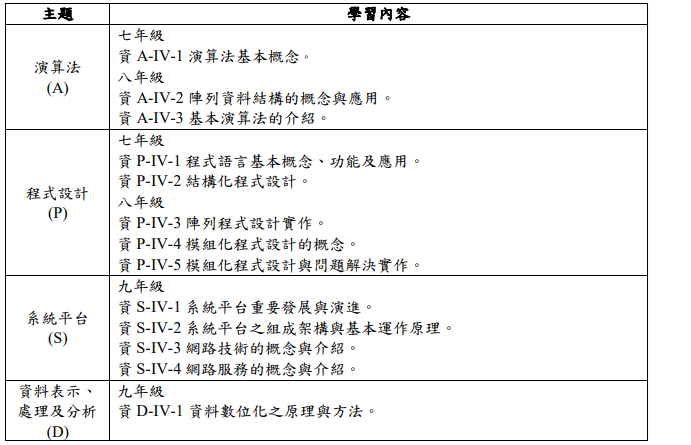
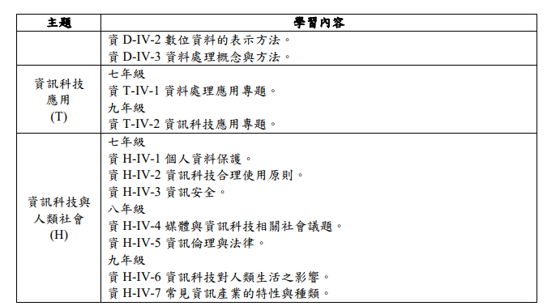

國民中學科技領域課程綱要重點
十二年國民基本教育科技領域課程綱要（第四學習階段）
一、基本理念
願景
「成就每一個孩子—適性揚才、終身學習」
隨著網路、大數據、物聯網等科技快速發展，現代國民應具備掌握、分析、運用科技的能力，並友善運用資源以促進永續發展。
本課程旨在培養學生的科技素養，透過運用科技工具、材料與資源，培養學生動手實作、設計創造科技工具及資訊系統的知能，並涵育創造性思考、邏輯與運算思維、問題解決等高層次思考能力。
課程發展以學生的生活經驗為基礎，在解決問題與實作的過程中，培養「設計思考」與「運算思維」的核心知能。
設計思考
強調「做、用、想」的能力，透過觀察與解決生活問題，培養學生動手做、使用科技產品以及設計與批判思考的能力。
運算思維
透過電腦科學相關知能的學習，培養邏輯思考與系統化思考等能力。
二、課程目標
科技領域的課程目標在於協助學生：
目標一
習得科技的基本知識與技能，並培養正確的觀念、態度及工作習慣。
目標二
善用科技知能以進行創造、設計、批判、邏輯、運算等思考。
目標三
整合理論與實務以解決問題和滿足需求。
目標四
理解科技產業及其未來發展趨勢。
目標五
啟發科技研究與發展的興趣，不受性別限制，並從事相關生涯試探與準備。
目標六
了解科技與個人、社會、環境及文化之相互影響，並能反省與實踐相關的倫理議題。
三、時間分配
國民中學教育階段，科技領域學習節數為每週 2節課（分為資訊科技、生活科技各一節）
四、核心素養



五、學習重點
學習重點由學習表現與學習內容兩部分組成。
學習表現
學習表現編碼說明
第1碼：學習表現的構面及類別
第2碼：學習階段別
- Ⅳ - 第四學習階段（國民中學 7-9 年級）
- Ⅴ - 第五學習階段（高級中等學校 10-12 年級）
第3碼：流水號
※ 代表加深加廣選修課程的學習表現


學習內容
學習內容編碼說明
第1碼：科目與主題
- 「資」 - 表示資訊科技的內涵
- 「生」 - 表示生活科技的內涵
第2碼：學習階段別
- Ⅳ - 第四學習階段（國民中學 7-9 年級）
- Ⅴ - 第五學習階段（高級中等學校 10-12 年級）
第3碼：流水號
＊ 表示各校或教師可依學生學習需求自行決定是否教授本學習內容


附錄三：學習內容詳細說明
查看完整內容
陸、實施要點
- 應兼重資訊科技與生活科技，並注重性別平等
- 資訊科技：以運算思維為主軸，著重培養解決問題的能力
- 生活科技：著重創意設計，培養學生的創意與設計能力
- 教材應符合課程理念、具時代性與前瞻性，並結合日常生活經驗
- 教材內容須重視性別平等、文化差異及人權理念
- 教學宜以問題解決或專題製作方式進行
- 實作活動時數宜佔整體課程的 二分之一至三分之二
- 教學應破除性別刻板印象，鼓勵學生修習非傳統性別之學科領域
- 初學者可採用視覺化程式設計工具
- 資訊科技與生活科技課程應在各自的專科教室進行
- 應配備適切的軟硬體與機具設備
- 設備的擺放與使用應以安全為首要考量
- 評量應涵蓋科技知識、態度、操作技能與統合能力
- 兼重形成性與總結性評量
- 應透過實作、晤談、檔案評量等多樣化方式進行
參考資料
十二年國民基本教育科技領域課程綱要
最後更新
2025年10月